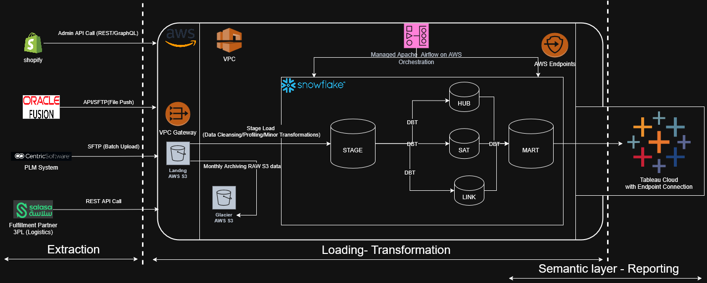

🧱 dbt Data Vault 2.0 — eCommerce Analytics Project
🧭 Overview
This project demonstrates how to implement a Data Vault 2.0 architecture using dbt to model data from multiple sources in the eCommerce and logistics domain.
It integrates data from: - 🛒 Shopify (sales, products, customers) - 🚚 3PL Logistics (SALSA) (Fulfillments, tracking, Delivery) - 🏢 Centic Software (Planning, Inventory) - 💰 Finance/Accounting systems (Oracle Fusion ERP)
The models are deployed and orchestrated using ApacheAirflow- Managed in AWS and tested in Snowflake.
🧱 Architecture
 - Staging Layer: Standardized, cleaned data from each source - Hubs: Business keys (e.g., customer, order, product) - Links: Relationships (e.g., order ↔ products) - Satellites: Contextual details (e.g., order status, address, payment) - Marts: Flattened, analytics-ready views, materialized views
🧰 Tech Stack
| Component | Tool/Service |
|---|---|
| Modeling | dbt (Core + Cloud) |
| Warehouse | Snowflake |
| Orchestration | ApacheAirflow - AWS Managed |
| Ingestion | Python Custom |
| Versioning | GitHub |
| Testing | dbt tests, snapshots |
🚀 How to Run
````bash
1. Clone the repo
git clone https://github.com/motiramgh/DBT-ECOMM-DATA-VAULT.git cd DBT-ECOMM-DATA-VAULT
2. Update ~/.dbt/profiles.yml:
ecomm_data_vault:
target: dev
outputs:
dev:
type: snowflake
account:
3. Install dbt and Dependencies & Project Packages
pip install dbt-snowflake dbt deps
4. To populate static reference data:
dbt seed
5. Run Staging Models
dbt run --select stage
6. Run Vault Models
dbt run --select vault
Or run a specific component:
dbt run --select +hub_order
7. Run Data Marts (Optional)
If you've defined any marts or reporting layers:
dbt run --select marts
8. Run All Models (Full Pipeline)
dbt run
9. Run Tests
dbt test
10. Generate and View Documentation
dbt docs generate dbt docs serve